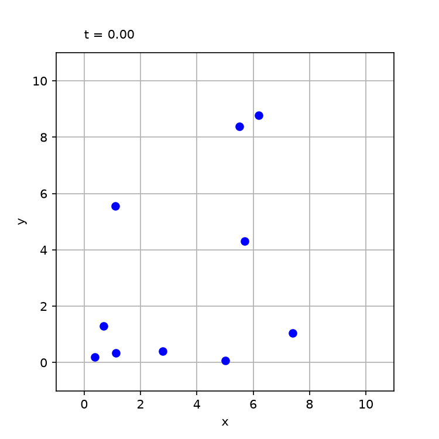
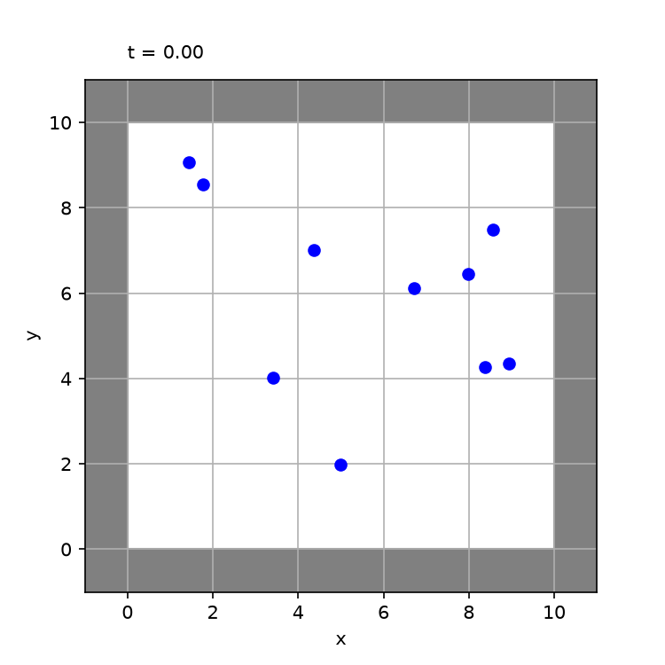
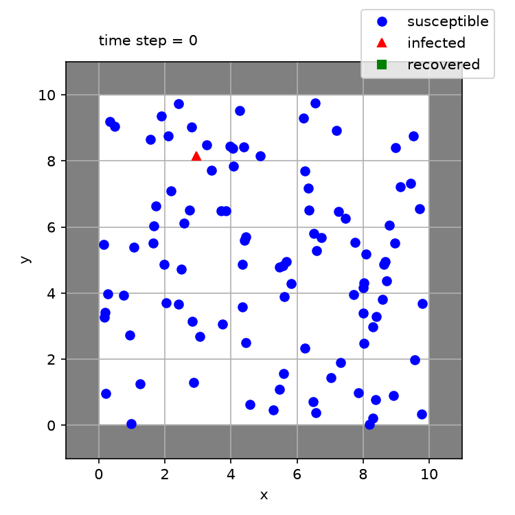
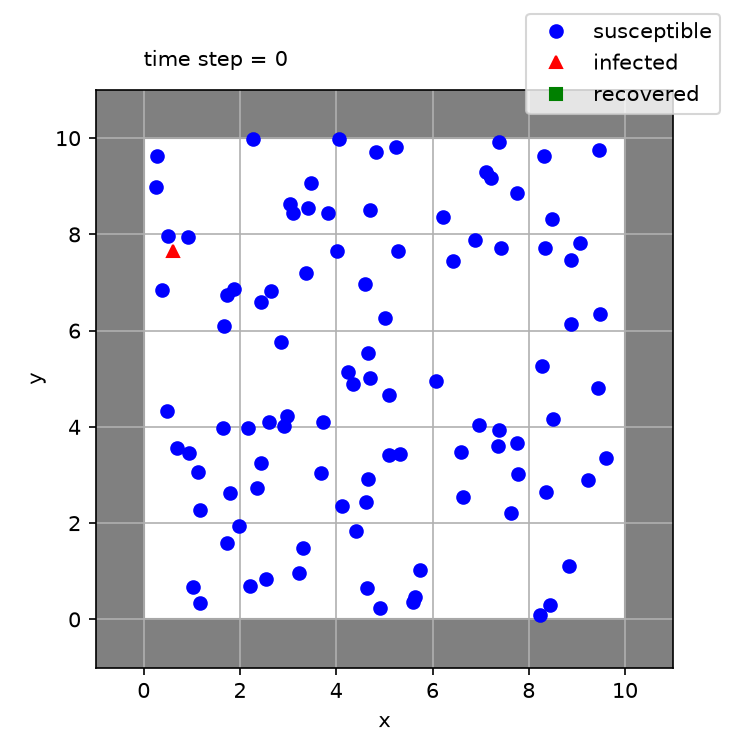

2026年度
総合演習2
社会系シミュレーション
(第3回)
中島 涼輔
(システム情報)
NSSOL Lab.
2026/11/25
社会系シミュレーション (前半) の復習
-
(現実世界では実験が困難な)
人間社会をコンピュータ上で再現することで,
将来予測や政策決定に役立てる
-
社会システムには厳密な物理法則のようなものは存在しない
-
観察や推測により,
個々のプロセスを数式で模擬的に表現
(感染者が多い場所ほど感染者が増えやすい
etc.) = モデル化
-
システムダイナミクス
(社会系シミュレーション 第1回)
-
社会を構成する個人・組織ではなく,
それらを集めたグループに注目 (感染者の総数,
免疫保持者の総数 etc.) =
集中定数モデル (ボックスモデル)
-
方程式の非線形性を通じて複雑な挙動が現れる
-
エージェントベースモデリング
(社会系シミュレーション 第2〜4回)
-
個人レベルの行動や意思決定を考慮し,
それらがシステム全体をどう形成しているかに注目
-
個々の相互作用を通じて創発現象が現れる
エージェントベースモデリング
-
固定エージェントシミュレーション
(社会系シミュレーション 第2回)
-
移動しない個々の対象 (エージェント)
の位置関係や距離に応じて物事が進行 ≒
分布定数モデル
-
代表例: セルオートマトン
-
隣接するセルの状態に応じて,
自らの状態が変化
(隣に感染者がいれば感染 etc.)
-
可動エージェントシミュレーション
(社会系シミュレーション 第3〜4回)
-
各エージェントが自分の状態に応じて行動し,
他のエージェントと相互作用する
(近くに感染者がいれば感染,
自分が感染したら行動を控える etc.)
準備
-
可動エージェントシミュレーションの出発点として,
複数のボールが 2
次元領域を等速直線運動するシミュレーションを考える
- ボール間の衝突は無視
- 初期位置と速度はランダムに設定
-
壁がないのでボールは画面外に出ていく

配布プログラムコードの実行
-
ダウンロードした .ipynb ファイルを Google Colab.
にアップロードして実行してください
-
自前で Python の仮想環境を構築して実行しても OK
-
GitHub にアップロードしている pyproject.toml
を利用してください (uv
または venv + pip を推奨)
- Python 3.12.14 で動作確認済み
実行できましたか ?
- 動画が再生できれば OK
-
初期位置と速度はランダムなので,
上の動画と全く同じにはなりません
配布プログラムコードの注意
-
配布したプログラムコードには, 可読性のためになるべく
docstring と型ヒント (型アノテーション) をつけている
-
docstring :
関数やクラス*1
の説明を記述できる複数行のコメント文のようなもの
def func():
"""関数 func の説明
Parameters: 仮引数の説明
Returns: 戻り値の説明
"""
(*1) Python の関数やクラスに自信がない人は,
システム情報学部1年生向け講義「演習1」の講義資料の一部を
https://r-nakashima-geophysics.github.io/lecture_note.html
にアップロードしているので参考にしてください)
-
型ヒント
(型アノテーション) :
Python は動的型付け言語だが,
作成者が想定している変数の型を表記できる
from typing import Final
a: int = 1 # 変数 a には整数型の値を代入することを想定
b: Final[float] = 0.1 # 変数 b は浮動小数点型の定数
演習
-
[演習3-0] social_3rd_ball2d.ipynb
を変更して, ボールが画面外に出ていかないように,
$0\leq x\leq 10$ の外に出たら $v_x$ が反転し,
$0\leq y\leq 10$ の外に出たら $v_y$
が反転するような処理を加えてください
- ボールの大きさは考慮しなくてよい
-
壁の中にめり込んだ次のステップで速度が反転してれば
OK

-
ヒント: プログラムコード内の MovableAgent クラスは 1
つの可動エージェント (ボール) を表すクラスで,
MovableAgentSystem
クラスは可動エージェント全体を表すクラスです
-
解答例は social_3rd_ball2d_wall.ipynb
SIR モデル + 可動エージェント
-
先ほどのボールの2次元運動のプログラムコードを元に
SIR モデルを実装する
-
GitHub にアップロードしている
social_3rd_sir.ipynb は, 以下の項目が実装済み
-
エージェントは感染状態
($\textcolor{blue}{S},
\textcolor{red}{I},
\textcolor{green}{R}$) のいずれかをもつ
-
エージェントはランダムに移動し,
範囲外に出たら範囲内に戻す処理をする
-
一定の時間ステップが経過すると回復する
(感染者
$\textcolor{red}{I} \to$
回復者
$\textcolor{green}{R}$)
-
現状, エージェント間の相互作用 (感染状態の伝播,
感受性者
$\textcolor{blue}{S} \to$
感染者
$\textcolor{red}{I}$) は実装されていない

演習
-
[演習3-1] social_3rd_sir.ipynb
を変更して, 感染状態の伝播 (感受性者
$\textcolor{blue}{S} \to$
感染者
$\textcolor{red}{I}$) を実装してください
-
指定された距離内に感染者が1人以上存在すれば,
その人数に依らず一定確率で感染する
-
[演習3-2]
指定された距離内に感染者が多く存在すればするほど,
より高い確率で感染するようにしてください
-
演習3-1と演習3-2でどのような結果の違いが生じるかを予想した上で,
実際にシミュレーションを行い,
結果を比較してみてください
-
パラメータの影響や試行ごとのばらつきについても考察してみてください

課題について
-
中島担当分 (社会系シミュレーション後半(第3・4回) +
マクロ系シミュレーション; 総合演習2の50/100点)
の課題は加点方式で採点します
-
各回ごとに小課題を, 社会系とマクロ系の第4回に最終課題を設定しますが,
全ての課題を提出する必要はありません
-
自分ができそうな課題を選択し,
他の授業の忙しさを加味して戦略的に提出して構いません
-
小課題を提出せずに最終課題のみ提出する,
またはその逆もアリです
-
課題を過剰に提出してもらっても構いませんが,
点数に上限があります (社会系後半: 17点,
マクロ系: 33点)
-
レポートは $\LaTeX$ や Microsoft Word などで作成し,
PDF 形式に変換してから BEEF+ に提出してください
-
どの課題かわかるように課題番号を明記してください
-
「短めのレポート」とは,
文章や数式・図表を合わせて 0.5〜3
ページくらいをイメージしています
生成AI使用ポリシー
-
学部低学年の授業では, (生成AIの力を借りずとも)
理工系・情報系人材が身につけておくべき最低限の知識や能力を修得しました
-
今後は, 生成AIを適切に使いこなす能力も重要になります
-
中島担当分の課題でも生成AIを活用することを強く推奨します
-
作成した文章の校正 /
箇条書きにしたものを文章にしてもらう
-
手書きの数式をスキャンして $\LaTeX$
形式に変換 / 式変形の検算
-
知らなかった・忘れてしまった知識を教えてもらう
/ アイデア出し / 壁打ち
-
プログラムコードのデバッグやレビュー など
-
レポートには必ず, 使用した生成AIモデルとその用途を明記してください (例: 文章校正のため Claude Haiku
5.5 を使用)
-
記載がなければ減点します.
生成AIを使う必要がなかった場合はそのことを明記してください
-
生成AIの出力内容は, 必ず確認・吟味してください
-
ハルシネーションが含まれている /
抽象的で内容が薄い文章が続く /
数式や文が不自然に崩れている等の場合は減点の可能性あり
社会系シミュレーション第3回小課題
-
[課題3-1]
この講義資料内の演習3-1の実装を行うために必要な処理手順を説明した短めのレポートを作成してください.
そのレポートには,
配布プログラムコードのどこにどのような変更を加える必要があるかを示したコード断片
(スクリーンショット可) を含めてください [3点]
-
[課題3-2]
この講義資料内の演習3-2の実装を行うために必要な処理手順を,
演習3-1との違いも含めて説明した短めのレポートを作成してください.
そのレポートには,
配布プログラムコードのどこにどのような変更を加える必要があるかを示したコード断片
(スクリーンショット可) を含めてください [3点]
-
[課題3-3]
演習3-1と演習3-2でどのような結果の違いが生じるかを予想した上で,
実際にシミュレーションを行い,
結果を比較してください.
その比較に基づく考察を行った短めのレポートを作成してください.
パラメータ依存性など複数の観点から考察を行なっている場合は高得点になります
[7点]